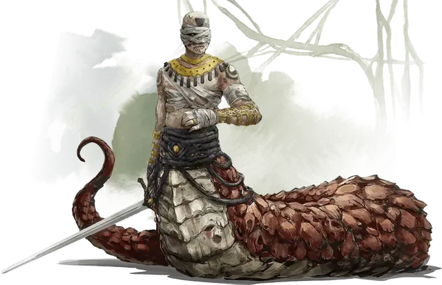

Рас Нси
Ras Nsi
Средний Монстр (Перевёртыш, Юань-ти), нейтрально-злой, именной НИП

Класс Доспеха 15 (Наручи защиты)
Хиты 127 (17к8 + 51)
Скорость 30 футов
| мод | спас | ||
|---|---|---|---|
| СИЛ | 17 | +3 | +3 |
| ЛОВ | 16 | +3 | +3 |
| ТЕЛ | 17 | +3 | +6 |
| мод | спас | ||
|---|---|---|---|
| ИНТ | 18 | +4 | +4 |
| МДР | 18 | +4 | +7 |
| ХАР | 21 | +5 | +5 |
Навыки Обман +8, Религия +7, Скрытность +6, Убеждение +8
Иммунитет к урону яд
Иммунитет к состояниям отравление
Чувства тёмное зрение 60 футов, пассивное Восприятие 14
Языки Общий, Бездны, Драконий
Опасность 7 (2900 опыта)
Бонус мастерства +3
Особенности
Специальное снаряжение. Рас Нси носит наручи защиты, в руках у него язык пламени (длинный меч), также у него есть камень послания, позволяющий связаться проводником Салидой.
Перевёртыш. Рас Нси может действием превратиться в Среднюю змею или принять свой облик юань-ти. Во всех обликах его характеристики остаются теми же самыми. Всё несомое и носимое им снаряжение не превращается. Он не меняет облик, если умирает.
Врождённое колдовство. Базовой характеристикой Рас Нси является Харизма (Сл спасброска от заклинаний 16). Он может накладывать следующие заклинания, не нуждаясь в материальных компонентах:
• Неограниченно:дружба с животными [animal friendship] (только змеи)
• 3/день: внушение [suggestion]
Использование заклинаний. Рас Нси является заклинателем 11-го уровня. Базовой характеристикой Рас Нси является Интеллект (Сл спасброска от заклинаний 15, +7 к атакам заклинаниями). У Рас Нси обладает подготовлены следующие заклинания волшебника:
• Заговоры (неограниченно): леденящее прикосновение [chilltouch], огненный снаряд [fire bolt], волшебная рука [mage hand], починка [mending], ядовитые брызги [poison spray];
• 1 уровень (4 ячейки): поспешное отступление [expeditious retreat],псевдожизнь [false life], волшебная стрела [magic missile], щит [shield];
• 2 уровень (3 ячейки): глухота/слепота [blindness/deafness], удержание личности [hold person], туманный шаг [misty step];
• 3 уровень (3 ячейки): восставший труп [animate dead], контрзаклинание [counterspell], огненный шар [fireball];
• 4 уровень (3 ячейки): усыхание [blight], превращение [polymorph];
• 5 уровень (2 ячейки): связь с иным миром [contact other plane],обет [geas];
• 6 уровень (1 ячейка): сотворение нежити [create undead].
Сопротивление магии. Рас Нси совершает с преимуществом спасброски от заклинаний и прочих магических эффектов.
Персонализация Рас Нси.
Идеал. «Я стремлюсь положить конец этому миру и править следующим».
Привязанность. «Юань-ти Чульта под моим командованием. Они помогут мне управлять империей».
Слабость. «Я сделаю всё, что угодно и предам кого угодно, чтобы спасти себя».
Действия
Мультиатака. Рас Нси совершает три рукопашные атаки, но может использовать Сжимание только один раз.
Укус (только в облике змеи). Рукопашная атака оружием: +6 к попаданию, досягаемость 5 футов, одна цель. Попадание: 5 (1к4 + 3) колющего урона плюс 7 (2к6) урона ядом.
Сжимание. Рукопашная атака оружием: +6 к попаданию, досягаемость 5 футов, одно существо. Попадание: 10 (2к6 + 3) дробящего урона и цель схвачена (Сл высвобождения 14). До окончания захвата цель опутана и Рас Нси не может сжимать другую цель.
Язык пламени – длинный меч (только в облике юань-ти). Рукопашная атака оружием: +6 к попаданию, досягаемость 5 футов, одна цель. Попадание: 7 (1к8 + 3) рубящего урона, или 8 (1к10 + 3) рубящего урона, если используется двумя руками, плюс 7 (2к6) урона огнём.
Описание
Слово «рас» является благородным титулом, родственным «герцогу». Рас-Нси был когда-то Чультским-паладином, избранным Убтао и поклявшимся защитником города Мезро. Он предал свои клятвы и был изгнан из города. Став мстительным военачальником, Рас Нси попытался покорить Мезро армией нежити, но потерпел поражение. Вместо того чтобы искать искупления, он искал мести и лишился своих дарованных божественных сил. Орда нежити, над которой он утратил контроль, распространилась по джунглям Чульта.
Уйдя в Ому, Нси остался верен благородному титулу и объединил силы с юань-ти, живущими там, и подвергся ужасному ритуалу, чтобы стать могущественным проклинателем юань-ти, сохранив свою человеческую голову и туловище, получив змеевидную нижнюю часть тела. Когда Убтао ушёл из мира, Рас Нси и его новые последователи юань-ти начали искать способ вызвать Дендар Ночную Змею. Ацерерак обещал помочь этим усилиям в обмен на обещание Рас-Нси защитить Гробницу Девяти Богов. По правде говоря, Ацерерак не намерен выполнять свою сделку, и Рас Нси начинает подозревать это.
Странная коллекция. У Рас Нси есть большая коллекция одежды и аксессуаров из дальних стран, большинство из которых были взяты у мёртвых исследователей. Коллекция включает в себя прекрасный кормирский плащ, винная фляга из Сембии, украшенный драгоценными камнями амнианский дублет и подходящий к нему мешочек для денег. Он также носит длинный меч язык пламени [flame tongue].
Медленная смерть. Однажды Рас Нси умер и был возвращён из мёртвых. Следовательно, он страдает от последствий проклятия смерти Поглотителя душ. Его максимальные хиты были уменьшены, а проклятые раны покрывают его плоть. В уместной иронии Рас Нси не осознает, что Ацерерак является причиной проклятия, поскольку ни он, ни юань-ти не знают о том, что лежит в Гробнице Девяти Богов, кроме мёртвых богов, для которых она предназначена. Если персонажи смогут заставить его понять, что их усилия помогут ему, Рас Нси может пересмотреть свои намерения и не станет стоять у них на пути.